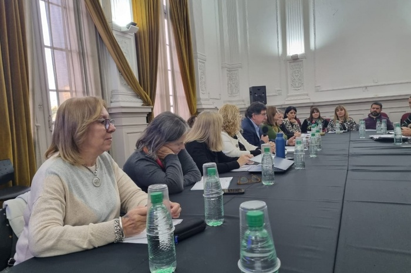

Gremial
LOS INICIOS
Las actas señalan como fecha fundacional de la Federación de Educadores Bonaerenses (FEB) el 4 de abril de 1959. Pero, como todo proceso histórico, existen importantes acontecimientos que preceden esa fecha y que, al igual que las fichas de dominó ordenadas en línea, basta con dejar caer una para que los sucesos empiecen a desencadenarse. “Ante la aparente inercia de las autoridades y la consiguiente paralización de las tramitaciones iniciadas con el objeto de obtener mejoras económicas para los maestros de la Provincia, el Distrito de Luján tomó la iniciativa asumiendo todas las responsabilidades, de convocar a una reunión de Delegados de los distritos que forman parte de la Comisión de 19 delegaciones, surgida de la Asamblea Plenaria efectuada en la ciudad de La Plata el día 12 de julio por el Movimiento Pro Dignificación del Magisterio “Domingo Faustino Sarmiento”.
Con estas primeras palabras comienza formalmente la historia de una lucha que dará como resultado la fundación de la Federación de Educadores Bonaerenses “Domingo Faustino Sarmiento”. A finales de la década del '50, la Gobernación de la provincia de Buenos Aires estaba encabezada por Oscar Alende, quien había accedido a su cargo en las elecciones de 1958 impulsado por su compañero y co-fundador del Partido Intransigente, Arturo Frondizi. En aquellos años, los docentes venían reclamando una serie de puntos que garantizaran una mejora sustancial de las condiciones laborales del sector. Existía en la Provincia una Asociación de Maestros que, como tantas otras entidades de la época, no lograba dar respuestas concretas a las demandas que los docentes venían realizando en reclamo de sus derechos. Una diáspora de aquella asociación culmina con la conformación del Movimiento Pro Dignificación del Magisterio. Así, este Movimiento conformado por una veintena de distritos de la Provincia sería el encargado de entregar al Gobernador Alende el Petitorio que incluía las aspiraciones de los docentes bonaerenses. Por razones de distancia, algunos distritos que participaban activamente del Movimiento y que conformaban la Comisión encargada de entregar el petitorio, debieron retirarse de la misma. De tal forma, el 26 de julio en la ciudad de Luján se constituyó una Mesa Coordinadora Provisoria, encargada de continuar con las gestiones del Movimiento Pro Dignificación Docente e invitar a cada distrito para que constituya la organización gremial a corto plazo.
SE INICIA LA LUCHA DOCENTE
Se propuso la realización de un Plenario con fecha tentativa para el 11 de septiembre, con el fin de informar a los docentes de las gestiones realizadas por la Mesa Coordinadora, considerar los problemas, invitar a los distritos que todavía no lo habían hecho a plegarse al movimiento y, debido a la falta de respuestas de aumento salarial y a la suspensión del Estatuto del Docente, considerar la posibilidad de realizar una huelga. El 27 de septiembre se concreta la realización del Plenario, el cual decide por mayoría declarar el “estado de alerta a partir del 29 al 30 del corriente mes”. Allí, también se decide iniciar una huelga “total”, hasta tanto sea promulgada la ley de equiparación. El 28 de septiembre de 1958, el Ministro de Educación, Ataúlfo Pérez Aznar, se comprometió a través de los medios de comunicación a dar respuesta al pedido de los docentes y, fundamentalmente, a elevar a la Legislatura Nacional el proyecto para equiparar los salarios de los educadores de la Provincia con los de Nación.
Al día siguiente, la Mesa Coordinadora declara una huelga por tiempo indeterminado, que llegaría a su fin el 21 de octubre de 1958, casi un mes después de comenzada. El Movimiento Pro Dignificación del Magisterio sentaba un claro pedido a las autoridades provinciales: “Las aspiraciones del Magisterio Provincial no han sido concretadas por las autoridades; el proyecto de ley elevado a la Legislatura, no concreta los cuatro puntos solicitados por la Mesa Coordinadora y que el señor Gobernador había formalmente prometido en las entrevistas que desde el mes de julio ha venido realizando; sueldo mínimo de 3.000 pesos, equiparación total y permanente con el Magisterio Nacional, jubilación móvil del 82%, bonificaciones por antigüedad y jerarquía; el movimiento expresa que no tiene fines políticos ni dogmáticos”. Durante la segunda semana de huelga, el Gobernador Alende expresa en un discurso ante la Legislatura que “los maestros, parte fundamental de la escuela, se hallarán protegidos de las contingencias políticas y económicas”. Sin embargo, a través de un comunicado en Radio Provincia, la Mesa Coordinadora denuncia “atropellos cometidos por la policía e intendentes bonaerenses contra docentes huelguistas, violando expresamente el derecho constitucional a la libre expresión de ideas”. La lucha de los docentes da sus frutos: el 22 de octubre, la Cámara de Diputados aprobó la equiparación de salarios con los docentes nacionales y al día siguiente, Senadores hizo lo propio. Ese mismo 23, se trató en la Cámara Alta la modificación del Estatuto del Docente. El 25 de ese mes, el Estatuto finalmente se convierte en Ley. Quedaba aún el tratamiento de la jubilación con el 82% móvil, compromiso que las autoridades provinciales habían asumido públicamente.
